Summary¶
This page contains important and hard-to-remember things from other chapters all in one place to make them easier to find. You can look for stuff you need from this page or you can use it to find something interesting to read.
Note
This page contains summaries, not introductions. I don't expect you to read it and then master everything it's talking about, so also read the human-friendly introductions in other chapters when needed.
Common Areas and Volumes¶
You may need to use integrals if you want to calculate an area that is not listed here.
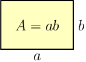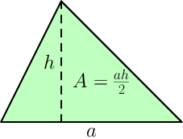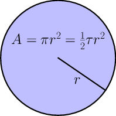 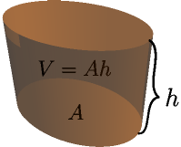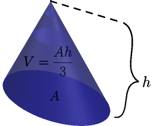
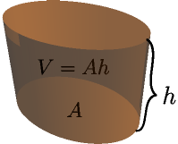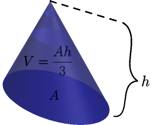
The circle area is explained here, the cone volume is explained here, and everything else is explained here.
Slopes¶
Notation: if  is first 3 and we change it to 4, the difference of
these values is
is first 3 and we change it to 4, the difference of
these values is  .
.

Only straight lines have slopes. The slope of the line in the picture
above is  , so it determines how much
, so it determines how much  changes compared to because
changes compared to because  .
.
Boring detail: vertical lines don't have slopes because the value is
always the same, so  regardless of the two points chosen
for calculating
regardless of the two points chosen
for calculating  and we get division by zero.
and we get division by zero.

Derivatives¶
Unofficially  is like
is like  , but infinitely small. Use e.g.
, but infinitely small. Use e.g.
 instead of when doing actual
calculations so the "smallness" is explicit and well-defined. The
instead of when doing actual
calculations so the "smallness" is explicit and well-defined. The  thing means the limit as goes to 0, e.g.
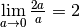 even though
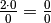 is not defined.
thing means the limit as goes to 0, e.g.
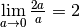 even though
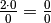 is not defined.
Definition of derivative:

Notation:

Handy rules:

See Also
All of these rules are proved here. I have spent quite a bit of time with creating good but human-readable proofs and you may find them interesting.
Note that if you have something like  as opposed to
as opposed to  you
need to use the
you
need to use the  rule; that is,
remember to multiply by
rule; that is,
remember to multiply by  . For example:
. For example:

Integrals¶
Area under curve  from
from  to
to  is
is  where
where  is an
antiderivative of
is an
antiderivative of  , i.e.
, i.e.  .
.
Notation:
 is the area in the picture.
is the area in the picture. where .
where . .
.
Example (remember that  ):
):
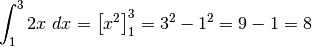
Here are some handy antiderivative rules. The can be any
constant and it has nothing to do with the left
side of an area, and and  can be any continuous functions.
can be any continuous functions.
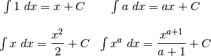
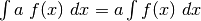
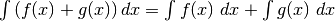
In some cases it makes sense to use derivative rules right-to-left.
You can prove these easily by finding the derivative of the right side;
it's always equal to whatever is between  and on the left
side.
and on the left
side.
Arc length: 
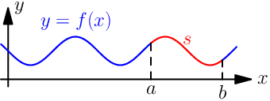
3D volume: 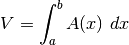
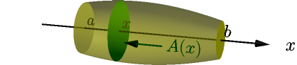
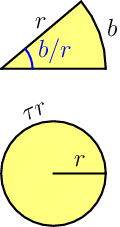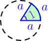Geometry and Trig¶
The angle of the green-ish slice at right is 1 radian. The angle of the
yellow slice is  radians.
radians.
A full turn is  radians, and a half turn
is
radians, and a half turn
is  radians. The perimeter of a circle
is where
radians. The perimeter of a circle
is where  is the radius.
is the radius.
360 degrees (or 360° for short) is a full turn.
Conversion functions:
const TAU = 2*Math.PI;
function toRadians(degrees) { return degrees/360*TAU; }
function toDegrees(radians) { return radians/TAU*360; }
Unit circle:
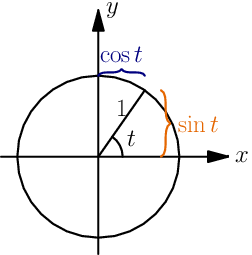
A triangle with a quarter-turn corner and a bunch of math:


Some programming languages have a hypot(a, b) function that returns
 . You can use it for calculating
. You can use it for calculating  .
.
Taylor Polynominals¶
The 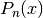 polynominals return approximate values of  , and they are good
when . A bigger
, and they are good
when . A bigger  means a more accurate value.
means a more accurate value.
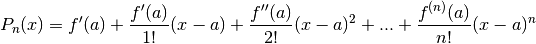
Here and 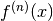 is the 'th
derivative, e.g. 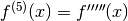. Many programming languages have a
factorial(n) function that returns .
Choosing usually results in simple polynominals.
Taylor Series¶
Here sin and cos work with radians.
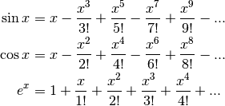
Other Bases¶
| Name | Base number | Prefix in programming |
|---|---|---|
| binary | 2 | 0b |
| octal | 8 | 0o |
| decimal | 10 | no prefix needed |
| hexadecimal | 16 | 0x |
We only have 10 digits but we need 16 for hexadecimal, so we also use A=10, B=11, C=12, ..., F=15.
Examples:

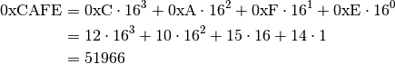
Python examples:
>>> 0b1111011
123
>>> 0o777
511
>>> 0xcafe
51966
>>> int('cafe', 16)
51966
Other languages have features like Python's int('cafe', 16) (e.g.
parseInt('cafe', 16) in JavaScript), but the prefixed numbers work
as is in most languages.
Hexadecimal Colors¶
#cafeee = rgb(0xca,0xfe,0xee) = rgb(202,254,238)
I calculated 0xca, 0xfe and 0xee with Python.
Conversion functions:
def hex2rgb(hexcolor):
assert len(hexcolor) == 7 and hexcolor[0] == '#'
return (int(hexcolor[1:3], 16), int(hexcolor[3:5], 16), int(hexcolor[5:7], 16))
def rgb2hex(r, g, b):
# string formatting magic: %02x means hexadecimal padded with
# zeros until it's at least 2 characters wide
return '#%02x%02x%02x' % (r, g, b)